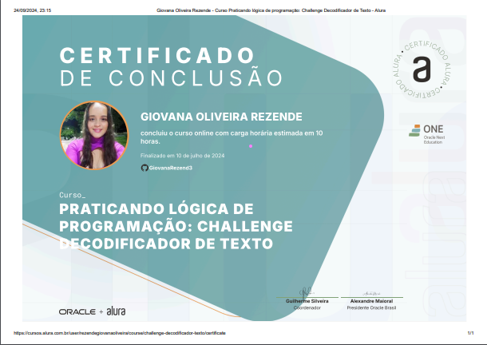
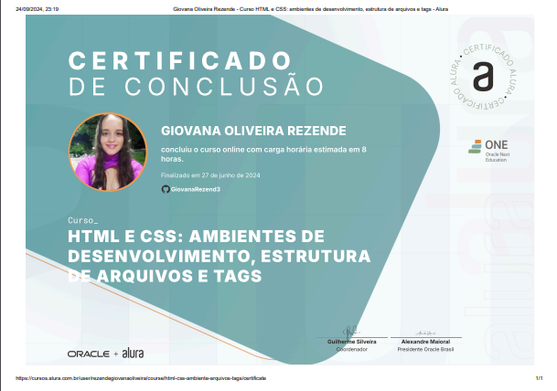
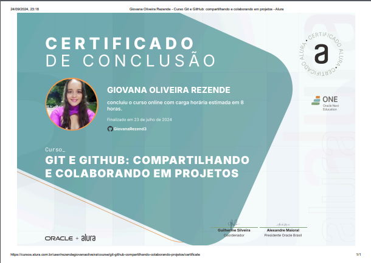
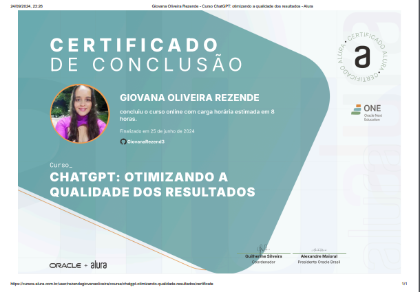
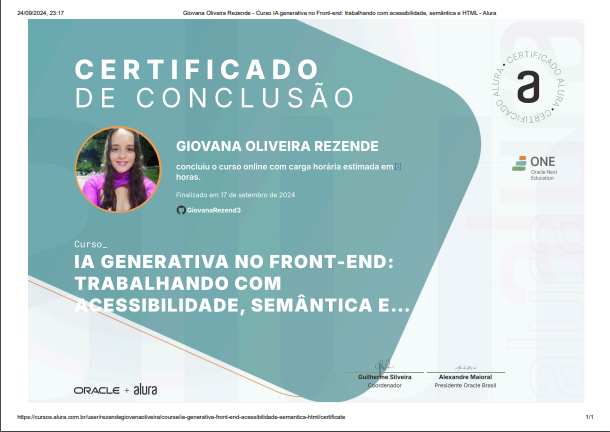

O que aprendi e Fiz durante a Formação ONE
Na Formação da Turma 7 - Iniciante em Programação Front-end, já conclui alguns cursos e outros ainda estão por vir.
Além disso, desenvolvi projetos que me ajudaram a adquirir habilidades essenciais, preparando-me para oferecer o melhor em um ambiente de trabalho.
Meu objetivo é não apenas entregar código, mas um código que priorize acessibilidade, semântica e interfaces interativas e responsivas.
Projetos
LuffyDecoder
Este projeto tinha como finalidade construir um decodificador de textos, permitindo que os usuários transformassem mensagens codificadas em um formato legível. durante o desenvolvimento, explorei conceitos de lógica de programação e manipulação de strings, criando uma interface interativa que facilita a interação do usuário com a ferramenta.
Saiba Mais sobre o projeto aqui:
Formações Concluídas
Durante minha trajetória, concluí formações que me permitiram desenvolver habilidades fundamentais para o mundo da tecnologia.
Desde a construção de interfaces interativas até a implementação de soluções acessíveis e responsivas, essas formações solidificaram meu conhecimento em áreas essenciais do desenvolvimento front-end.
Cada curso me preparou para enfrentar desafios práticos e criar projetos com foco em usabilidade e eficiência.

Certificados
Meus certificados representam o compromisso com a busca contínua por conhecimento e excelência profissional. Eles abrangem tópicos variados que reforçam minhas competências em tecnologias e ferramentas atuais do mercado. Cada certificado simboliza um passo importante em minha jornada de aprendizado e aprimoramento, demonstrando minha dedicação em oferecer soluções de qualidade no desenvolvimento de projetos.
- 
- 
- 
- 
- 